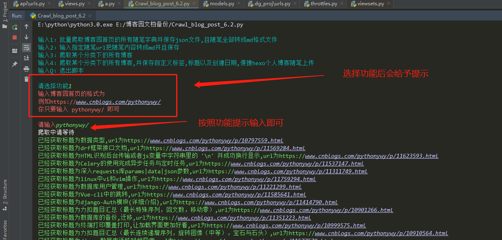
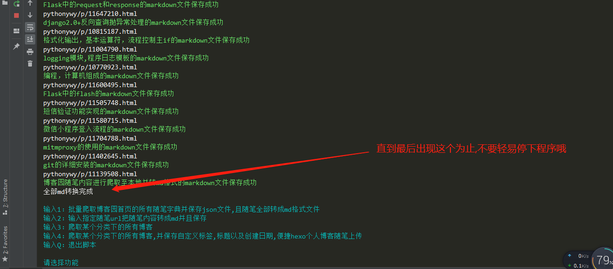
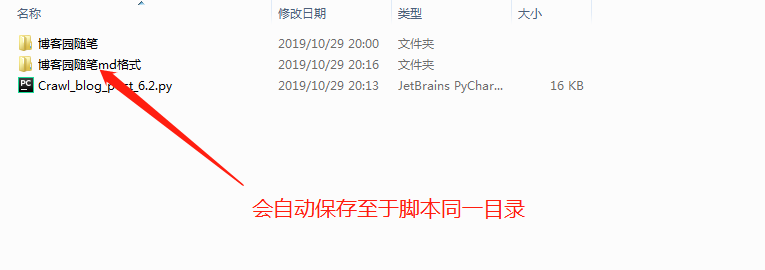

https://github.com/a568972484/html_to_md
可视化界面内代码还未更新
运行Crawl_blog_post_6.3.py即可
Crawl_blog_post_6.3.py



作者博客:小小咸鱼ywy
博客链接:https://www.cnblogs.com/pythonywy
QQ:568972484
VX:15757876283
请大家不要加线程进程进去没必要哈也没必要加大博客园负担